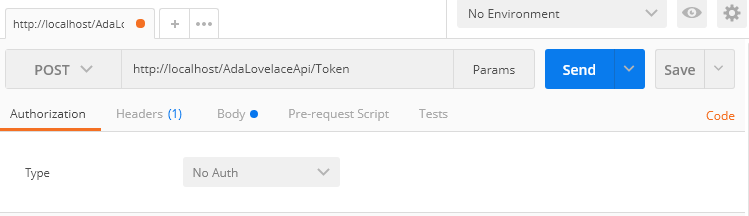
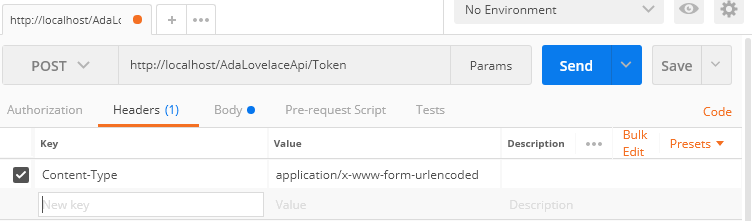
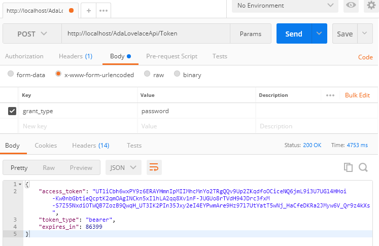

Este artigo explica o passo a passo para aplicar segurança em um sistema web que usa web API em C#. Usaremos autenticação baseada em Token e autenticação windows para o login. Para isso, usamos a biblioteca Microsoft Owin.
O cliente (aplicação web no navegador) faz uma requisição ao servidor solicitando um token de segurança baseado no usuário logado (no nosso caso, usuário logado do windows) e na sessão. Para cada requisição à API, esse token deve ser enviado no cabeçalho da requisição. Cada método da API possui uma configuração de autorização. Esse método só executa e faz o retorno apropriado se o usuário daquele token possui os acessos necessários. Se ele não tiver acesso ou o token não for passado no cabeçalho, a requisição é respondida com um erro de autenticação.
Importando os Pacotes no Visual Studio
Primeiramente, importamos o pacotes necessários para o projeto: Microsoft.Owin.Security.OAuth e Microsoft.Owin.Host.SystemWeb.
No Visual Studio, clique com o botão direito no projeto, vá em "Manage NuGet packages", digite "Microsoft.Owin.Security.OAuth" no campo de busca, selecione a última versão e instale. O mesmo para Microsoft.Owin.Host.SystemWeb.
Estrutura das Classes Necessárias
- SeuProjetoAPI
--- App_Start
------ Startup.Auth.cs: configurações de geração do Token
--- Providers
------ ActiveDirectoryOAuthProvider.cs: define regras de negócio para a autenticação
------ RestrictionsRules.cs: define regras de acesso customizadas para os perfis de usuário
--- Global.asax: habilitar CORs e cabeçalhos de autenticação
--- Startup.cs: chama Startup.Auth.cs
--- Web.config: configuração da autenticação windows
Startup
O código a seguir mostra a implementação da classe Startup.cs:
using Microsoft.Owin; using Owin; [assembly: OwinStartup(typeof(Adadev.Security.Startup))] namespace Adadev.Security { public partial class Startup { public void Configuration(IAppBuilder app) { ConfigureAuth(app); } } }
O código a seguir mostra a implementação da classe Startup.Auth.cs. A configuração "TokenEndpointPath" é o caminho para a requisição do token. "AccessTokenExpireTimeSpan" é o tempo de expiração para o token.
using Microsoft.Owin; using Microsoft.Owin.Security.OAuth; using Owin; using System; using Adadev.Security.Providers; namespace Adadev.Security { public partial class Startup { public void ConfigureAuth(IAppBuilder app) { string user = System.Web.HttpContext.Current.User?.Identity?.Name; // Para utilizar o Header "Authorization" nas requisições app.UseOAuthBearerAuthentication(new OAuthBearerAuthenticationOptions()); // Ativar o método para gerar o OAuth Token app.UseOAuthAuthorizationServer(new OAuthAuthorizationServerOptions() { TokenEndpointPath = new PathString("/Token"), Provider = new ActiveDirectoryOAuthProvider(), AccessTokenExpireTimeSpan = TimeSpan.FromDays(1), AllowInsecureHttp = true }); } } }
Habilitar CORs (Cross-Origin) e Cabeçalhos
Para não termos problemas com as chamadas cross-origin (de servidores diferentes) e com cabeçalhos de autorização, deve-se habilitar o CORs e outras permissões de cabeçalhos, inclusive o cabeçalho Authorization usado para enviar o token de acesso. Isso é feito em Global.asax.
using System; using System.Web.Http; namespace Adadev.Security { public class MvcApplication : System.Web.HttpApplication { protected void Application_Start() { GlobalConfiguration.Configure(WebApiConfig.Register); } protected void Application_BeginRequest(object sender, EventArgs e) { var origin = Context.Request.Headers["Origin"]; if (string.IsNullOrWhiteSpace(origin)) origin = "*"; Context.Response.AddHeader("Access-Control-Allow-Origin", origin); Context.Response.AddHeader("Access-Control-Allow-Credentials", "true"); Context.Response.AddHeader("Access-Control-Allow-Methods", "GET,HEAD,OPTIONS,POST,PUT,DELETE"); Context.Response.AddHeader("Access-Control-Allow-Headers", "Access-Control-Allow-Headers, Origin, Accept, X-Requested-With, Content-Type, Access-Control-Request-Method, Access-Control-Request-Headers, Access-Control-Allow-Credentials, Authorization"); if (Context.Request.HttpMethod != "OPTIONS") return; Context.Response.End(); } } }
Regras de Autenticação
Na classe ActiveDirectoryOAuthProvider.cs é definida a regra de autenticação, ou seja, ela responsável por conferir usuário, senha e se ele possui acesso ao sistema. Neste exemplo, conferimos apenas se o usuário do windows está logado. Você pode inserir sua própria regra no método isUserAuthenticated, conferindo, por exemplo, se o usuário possui alguma permissão cadastrada na base de dados.
using Microsoft.Owin.Security.OAuth; using System.Security.Claims; using System.Threading.Tasks; namespace Adadev.Security.Providers { public class ActiveDirectoryOAuthProvider : OAuthAuthorizationServerProvider { public override Task ValidateClientAuthentication(OAuthValidateClientAuthenticationContext c) { c.Validated(); return Task.FromResult<object>(null); } public override Task GrantResourceOwnerCredentials(OAuthGrantResourceOwnerCredentialsContext c) { if(isUserAuthenticated()) { Claim claim1 = new Claim(ClaimTypes.Name, System.Web.HttpContext.Current.User.Identity.Name); Claim[] claims = new Claim[] { claim1 }; ClaimsIdentity claimsIdentity = new ClaimsIdentity(claims, OAuthDefaults.AuthenticationType); c.Validated(claimsIdentity); } return Task.FromResult<object>(null); } public static bool isUserAuthenticated() { if(System.Web.HttpContext.Current.User != null) { bool isAuthenticated = System.Web.HttpContext.Current.User.Identity.IsAuthenticated; string userName = System.Web.HttpContext.Current.User.Identity.Name; // use sua regra de negócio aqui (consultar base de dados, etc) if(isAuthenticated){ return true; } } return false; } } }
Controle de Acesso
Geralmente o controle de acesso é feito usando o atributo [Authorize] em cima do método da API definindo as roles e usuários configurados no Windows. Como no exemplo abaixo, apenas os usuários usuario1 e usuario2 têm acesso ao método GetInfo:
[Authorize(Users = @"dominio\usuario1, dominio\usuario2 ")] [HttpGet] public HttpResponseMessage GetInfo() { return Request.CreateResponse(HttpStatusCode.OK, new { Content = $"Usuario logado: " + User?.Identity?.Name }); }
Neste artigo mostraremos como customizar esse controle, da forma como preferir, como no caso do controle de acesso ser feito via base de dados (usuário, perfil e acessos consultados em tabelas). O código abaixo foi implementado no arquivo RestrictionsRules.cs. A customização Basic apenas verifica se o usuário está autenticado (verificação implementada na classe ActiveDirectoryOAuthProvider):
using System.Web.Http; using System.Web.Http.Controllers; using System; namespace Adadev.Security.Providers { public class Basic : AuthorizeAttribute { protected override bool IsAuthorized(HttpActionContext actionContext) { return ActiveDirectoryOAuthProvider.isUserAuthenticated(); } } }
A customização é usada da seguinte maneira no método da API:
[Basic] [HttpGet] public HttpResponseMessage GetInfo() { return Request.CreateResponse(HttpStatusCode.OK, new { Content = $"Usuario logado: " + User?.Identity?.Name }); }
Mas e se eu quiser autorizar cada método da API de acordo com acessos pré configurados? Considerando que os códigos de acesso estão em um Enum, acrescentamos uma classe em RestrictionsRules.cs:
using System.Web.Http; using System.Web.Http.Controllers; using System.Linq; using System; namespace Adadev.Security.Providers { public class CustomAuthorize : AuthorizeAttribute { private string[] accesses; public CustomAuthorize(params object[] accessRequired) { if(!(accessRequired.Any(p => p.GetType().BaseType != typeof(Enum)))) {// Enum com os códigos de acesso // lista de acessos exigidos para determinado método (lista adicionada na assinatura do método da API) this.accesses = accessRequired.Select(a => Enum.GetName(a.GetType(), a)).ToArray(); } } protected override bool IsAuthorized(HttpActionContext actionContext) { if(this.accesses != null && this.accesses.Count() > 0) { foreach(string accessCode in this.accesses) { // Sua implementação para verificar se o usuário tem acesso a tal parte do sistema bool isAuthorized = ActiveDirectoryOAuthProvider.UserHasAccess(accessCode); if(isAuthorized) { return true; } } } return false; } } public class Basic : AuthorizeAttribute { protected override bool IsAuthorized(HttpActionContext actionContext) { return ActiveDirectoryOAuthProvider.isUserAuthenticated(); } } }
Dado que AccessCode é o enum com os códigos de acesso, usamos a autorização customizada da seguinte maneira no método da API:
[CustomAuthorize(AccessCode.editUser_Modify, AccessCode.editProfile_Get)]
[HttpPost]
public HttpResponseMessage SaveUser(UserRequest user) {
...
}
O parâmetro accessRequired no construtor da classe CustomAuthorize traz a lista de códigos de acesso passados como parâmetro na configuração do método da API. Essa lista é usada no método IsAuthorized.
Autenticação do Windows
Para habilitar a autenticação do Windows, nas propriedades do projeto (no Visual Studio, selecione o projeto e aperte F4):
- Habilitar Windows authentication
- Desabilitar Anonymous authentication
Em Web.config adicionar authentication mode="Windows" a system.web:
<system.web>
...
<authentication mode="Windows" />
</system.web>
Para publicar a aplicação no IIS, também é necessário habilitar a autenticação Windows. Primeiro, verifique se o recurso está habilitado:
- Acessar o painel de controle;
- Adicionar e remover programas;
- Ativar ou desativar recursos do Windows;
- Na caixa de diálogo Recursos do Windows:
-- Em Serviços de Informações da Internet / Serviços da World Wide Web / Segurança;
-- Selecione Autenticação do Windows.
No IIS:
- Selecione a API (ATENÇÃO: não selecionar a app web);
- No painel "exibição de recursos" vá em autenticação:
-- Desabilite Autenticação Anônima;
-- Habilite Autenticação do Windows.
Testando com o Postman
Para testar se a autenticação está funcionando, podemos usar o Postman, setando as propriedades, como mostrados nas imagens abaixo:
 
Token retornado:
Implementação no Front End
Para solicitar o token de segurança no JavaScript, deve-se enviar a seguinte requisição ajax:
this.getAuthorizeToken = function () { $.ajax({ "async": false, "crossDomain": true, "url": "http://localhost/AdaLovelaceApi/Token", "method": "POST", "headers": { "content-type": "application/x-www-form-urlencoded" }, "xhrFields": { "withCredentials": true }, "data": { "grant_type": "password" } }).done(function (data, textStatus, jqXHR) { sessionStorage.setItem("authToken", data.token_type + " " + data.access_token); }).fail(function (qXHR, textStatus, errorThrown) { console.log("error", "Usuario nao autorizado"); }); }
A URL é formada pelo endereço do servidor mais o endereço configurado na classe Startup.Auth.cs: "/Token". O servidor mandará como resposta um objeto com dois atributos que devem ser concatenados: token_type e access_token. Esse token pode ser salvo como uma variável global. No exemplo, salvamos o token na variável do browser sessionStorage.
Ao chamar os métodos da API, esse token deve ser passado no cabeçalho das requisições como Authorization:
$.ajax({
url: ajaxUrl,
type: ajaxType,
.
.
.
headers: {
"Authorization": sessionStorage.getItem("authToken")
}
});